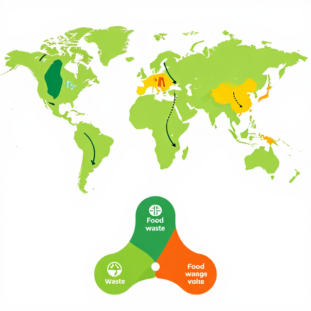

從廢棄物到新生命
阿修的寶藏探險 — 循環經濟與日常生活
♻️🛍️📱👕
起點
同樣一件東西，為什麼有人覺得是垃圾，有人覺得是寶藏？
1
怎麼「看」廢棄物？2
它能「流」到哪裡再生？3
我能「做」什麼？今天當「資源偵探」，看見廢棄物的另一張臉。
活動一
廢棄物大翻案
誰的垃圾，是誰的寶？
活動一・步驟 2
台灣回收率 59.9% — 全球前段班
1998–2024 台灣人均日垃圾量折線圖
資料來源：環境部資源循環署 2024
2024 年回收率約 59.9%；人均每日垃圾從 1.14 公斤降到 0
你比爸媽小時候，少丟近 6 成垃圾。這是大家一起的成果。
資料來源：環境部 資源循環署
活動一・步驟 3
同一件 T 恤，四個人眼裡四種樣子
👴
爺爺
「這拿來當抹布、擦桌子剛剛好。」
♻️
資源回收阿伯
「裁開是棉紗原料，可以再織成新布。」
🛍️
古著店老闆
「復古設計，掛在櫥窗一定很搶眼！」
🌍
非洲青年
「正好是我能穿的尺寸，謝謝你。」
廢棄物的定義，取決於看的人是誰。
活動二
廢棄物的身價
回收價值五大因素
活動二・步驟 2
都市礦山：1 公噸廢手機 = 60 倍金礦石
手機解剖圖標 60 種金屬+ 黃金提煉量對比柱狀圖
比較圖
1 噸廢手機可提煉約 300 公克黃金，是金礦石（5 公克／噸）
回收價值五因素
① 物品狀況 ② 原料稀缺度 ③ 回收成本 ④ 市場需求 ⑤ 污染風險
資料來源：聯合國大學 — 全球電子廢棄物監測平台
活動二・步驟 3
價值估算小偵探
| 廢棄物 | 每公斤回收價值 | 排序（1～5） | 原因 |
|---|---|---|---|
| 寶特瓶 | |||
| 鋁罐 | |||
| 舊報紙 | |||
| 廚餘 | |||
| 破玻璃 |
上環境部回收平台查資料，思考：為什麼差這麼多？
資料來源：環境部 回收再利用統計平台
活動二・步驟 4
12 個寶特瓶 = 1 件運動衣
12 個寶特瓶 → 1 件機能衣的變身流程圖
流程圖
台灣寶特瓶回收率 >95%，每年回收約 9 萬公噸；回收 1 公
你身上的衣服，可能曾經是 12 個寶特瓶。
資料來源：環境部 — 寶特瓶回收再利用統計
活動三
回收管道地圖
在地價值兌換機制大點名
活動三・步驟 1
廢棄物的六條重生道路
① 資源回收站
- 清潔隊定點
- 校園回收箱
- 社區回收車
② 跳蚤市集
- 師大二手市集
- 簡單生活節
- 社區市集
③ 古著店
- 五分埔
- 永康商圈
- 各地 Thrift Shop
④ 食物銀行
- 全民食物銀行
- 安得烈協會
- 1919 食物銀行
⑤ 3C 回收點
- 燦坤、全國電子
- 電信業門市
- 蘋果回收計畫
⑥ 修理咖啡館
- Repair Café Taipei
- 校園修理日
- 家電維修站
活動三・步驟 2
社區地圖任務
學校周邊地圖標示六種價值兌換點
概念整理
關鍵任務：在學校 1 公里內，找出至少 5 個「價值兌換點」
分組任務：每組找 5 個地點、訪問 1 位居民、寫出 1 個改善建議。
活動三・步驟 3
舊衣的環遊世界 + 廚餘的三條路
世界地圖台灣→非洲、東南亞舊衣箭頭+ 廚餘三去向豬飼料／堆肥／沼氣發電
世界連線圖與教學標記

台灣舊衣回收 7.8 萬公噸／年，60% 出口；廚餘 55 萬公噸
你捨不得的舊衣服，可能正在非洲孩子身上繼續發光。
活動四
全校循環行動日
從一件小事開始改變
活動四・步驟 1
循環經濟 = 全球減碳 39%
地球溫度計 + 39% 減碳潛力長條圖
比例圖
全球若採用循環經濟，2030 前可減少約 39%（224 億公噸 CO
你的小行動 × 全台 2,300 萬人＝救地球的隱形超級英雄。
資料來源：艾倫麥克阿瑟基金會
活動四・步驟 2
校園跳蚤市集模擬
每人帶 3 件不用的物品，設攤位、貼標籤、訂價、交易；收入捐給在地環保團體。
| 物品 | 狀況（1～5） | 建議價格 | 誰可能會買？ |
|---|---|---|---|
想想看：原料稀缺、市場需求、物品狀況——哪個因素最影響你的訂價？
活動四・步驟 3
5R 黃金順序
1
Refuse 拒用
不需要就不拿。免洗筷、塑膠袋、贈品。
2
Reduce 減量
買少買精，避免過度包裝。
3
Reuse 重用
環保杯、購物袋、二手物。
4
Repair 修理
壞了先修，不急著換新。
5
Recycle 回收
真的不行才回收，分類確實。
越上面越環保。回收是最後一道防線。
活動四・步驟 3 ・學習單（投影版）
本月循環承諾
寫下你這個月要實踐的 5R 行動。
我會「拒用」的東西是：
我會「重用」的東西是：
我會「修理」而不是丟掉的是：
承諾人簽名：
家人見證：
完整互動版見 worksheet.html
總結
三個關鍵字，一起記住
第 1 個
眼光
廢棄物的定義
取決於誰在看
取決於誰在看
第 2 個
價值
物品狀況、原料稀缺
市場需求
市場需求
第 3 個
循環
5R 黃金順序
從個人到全校
從個人到全校
廢棄物不是終點，是另一段旅程的起點。